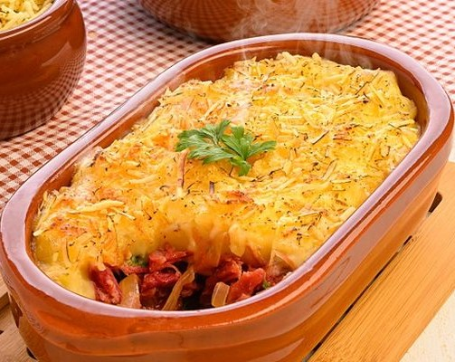
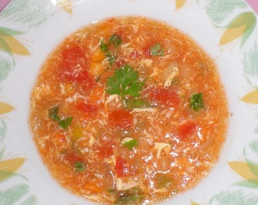

FAROFA DE CUSCUZ COMPLETA Uma farofa de cuscuz com carne de sol, linguiça nordestina, bacon, queijo coalho e outros ingredientes para deixar o prato irresistível. Visualizar CURAU DE MILHO Um prato simples e de fácil execução, mas extremamamente saboro ótimo para servir para visitas pois é um ótimo acompanhamento. Visualizar PAÇOCA DE CARNE SECA Farofa com a carne seca e as cebolas caramelizadas. Farofa, úmida e crocante ao mesmo tempo, brasileira, amarelinha, a cor do pecado! Visualizar  ESCONDIDINHO DE CHARQUE NORDESTINO Uma escondidinho pra lá de delicioso, com um recheio delicioso e bastante caprichado! Visualizar
 CANJA DO NORDESTE Uma canja ótima para os dias corridos pois além de ser extremamente saborosa ela pode ser preparada em apenas 15 min. Visualizar MOQUECA DE CAJU O caju tem uma textura firme e ligeiramente esponjosa, que depois de ser esmagado e extraído o suco é possível temperar essa fibra. Visualizar FRANGO AO CREME DE MILHO Um delioso recheio de frango encoberto de queijo. Com um aroma fenomenal e uma experiência extremamente saborosa. Visualizar FEIJÃO FRADINHO COM DENDÊ E CAMARÃO SECO Da típica comida baiana esse feijão é muito fácil e os ingrediente são fáceis de encontrar. Visualizar
CANJICA SALGADA COM CALABRESA Uma canjica diferenciada e muito saborosa, fácil e rápido de se preparar, porém apesar de sua simplicidade esse plato é uma explosão de sabor! Visualizar MUSSE DE CHOCOLATE INGREDIENTES: 250 g de chocolate ao leite, 250 g de chocolate meio amargo, 2 latas de leite condensado, 2 latas de creme de leite, 2 colheres de margarina, 2 caixas de morango. Visualizar MUSSE DE CHOCOLATE INGREDIENTES: 250 g de chocolate ao leite, 250 g de chocolate meio amargo, 2 latas de leite condensado, 2 latas de creme de leite, 2 colheres de margarina, 2 caixas de morango. Visualizar MUSSE DE CHOCOLATE INGREDIENTES: 250 g de chocolate ao leite, 250 g de chocolate meio amargo, 2 latas de leite condensado, 2 latas de creme de leite, 2 colheres de margarina, 2 caixas de morango. Visualizar